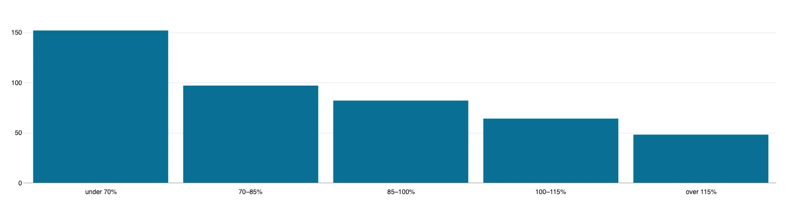
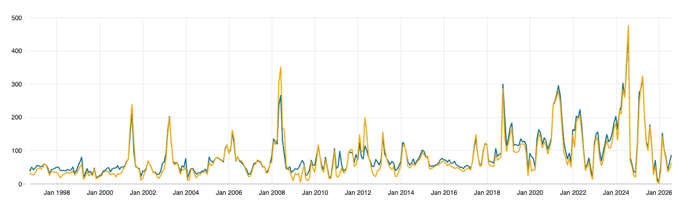
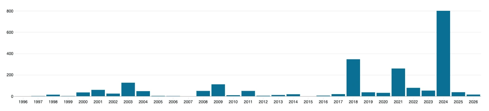
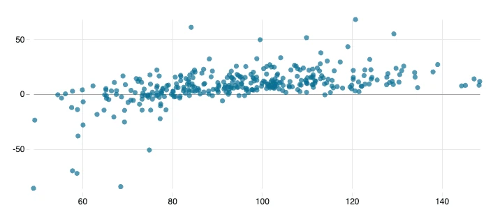
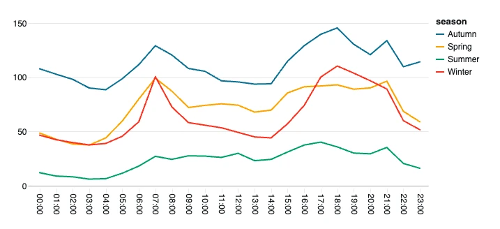
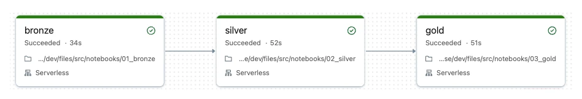
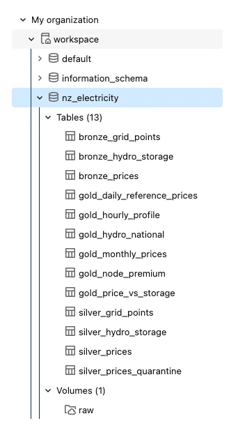

Data engineering · Databricks · Oct 1996 to Aug 2026
When New Zealand's hydro lakes run low, power costs three times as much.
I built a Databricks lakehouse for 30 years of wholesale electricity prices: 128 million half-hourly prices at 317 points on the national grid, joined to daily storage in the country's ten main hydro lakes. Raw files flow through bronze, silver and gold Delta tables with data-quality rules at every step, an automated job runs it all, and a dashboard tells the story.
What the data says
Charts from the Databricks dashboard built on the gold tables. Prices are wholesale, in NZD per megawatt-hour, not adjusted for inflation.
Low lakes, high prices
More than half of New Zealand's electricity comes from hydro. In months when national lake storage is below 70% of normal for the time of year, Auckland's wholesale price averages $152/MWh; above 115% of normal it's $48. In August 2024 the lakes were at 49% of normal and the price averaged $452. A month later, after rain, storage was 112% and the price fell to $80.

A new price level
From 1996 to 2017, annual averages were mostly $40–80/MWh, with spikes in dry years such as 2001, 2003 and 2008. Since 2018 they've sat at $110–200, and 2024 was the record at $200 on average. Across 339 months, price and storage correlate at −0.46 (−0.62 on log prices).

Half-hours over $500 in 2024
Price spikes used to be rare. 2018, 2021 and 2024 each had hundreds of half-hours above $500/MWh at Otahuhu, and 2024 had more than twice as many as any year before it.

Dry years flip the islands
Auckland usually pays about $8/MWh more than Benmore in the South Island, where most hydro is. When the southern lakes run dry the gap reverses: in 2008, with storage at 75% of normal, Benmore was $19 dearer. The spread tracks storage (r = 0.52).

The evening peak
Over the last year, prices peak between 5pm and 7pm in every season, with a smaller morning peak at 7–8am. Summer nights fell to $6–12/MWh, while autumn 2026 ran at $90–145 all day.

How it's built
A medallion lakehouse on Databricks, deployed from GitHub as code.

Engineering choices
- Incremental by design. Auto Loader remembers which files it has loaded, and silver only processes new bronze rows, merging them on date, period and node. Re-running is always safe, and a re-delivered file updates prices instead of duplicating them.
- Lineage on every row. Bronze keeps the source file and load time; Unity Catalog tracks how tables feed each other and the dashboard.
- Tested logic, thin notebooks. Transformations live in a Python package with pytest tests that run on GitHub Actions; the notebooks only call it. I ran the whole pipeline locally on open-source Spark and Delta Lake before it touched Databricks.
- Infrastructure as code. The job, its tasks and trigger are defined in a Databricks Asset Bundle and deployed from the repo.
The tables
Thirteen Delta tables in Unity Catalog, plus the landing-zone volume.

Data quality
What the checks caught
Every price row is tested against named rules. Failures aren't dropped: they go to a quarantine table with the rules they broke.
| Rule | What it catches | Rows |
|---|---|---|
not_placeholder | Prices of exactly ±$100,000/MWh, filling whole days at 103 grid points between 1998 and 2006. They're placeholders, not prices, and would have wrecked every average. | 123,745 |
price_plausible | Anything outside −$10,000 to $50,000/MWh. Real prices peak at about $10,700 at the benchmark nodes. | 0 |
date_present, period_in_range, poc_format, price_present | Malformed rows. Casts use try_cast, so one bad value is quarantined instead of failing the whole job. | 0 |
Daylight saving. A trading day has 48 half-hours, but 46 when clocks go forward and 50 when they go back. Periods are converted to real timestamps from local midnight in UTC, so the skipped and repeated hours land correctly; unit tests cover both days. A check after every run confirms every day has 46, 48 or 50 periods.
Known gaps. The market's first week, 1–7 October 1996, is incomplete in the source and excluded from that check. Hydro storage in the published dataset ends in December 2024, so price-versus-storage comparisons stop there.
Data and tools
Data
The Electricity Authority's Electricity Market Information open data: final energy prices by grid point, the Hydrological Modelling Dataset, and the network supply points table. The benchmark nodes are Otahuhu (Auckland) and Benmore (South Island).
Platform
Databricks Free Edition on serverless compute. Free workspaces can't download from the internet, so the raw files are uploaded to the landing-zone volume once; new months are picked up automatically after that.
Built with
Code, tests and the job definition: github.com/AmirmasoudGhorbani/nz-electricity-lakehouse.